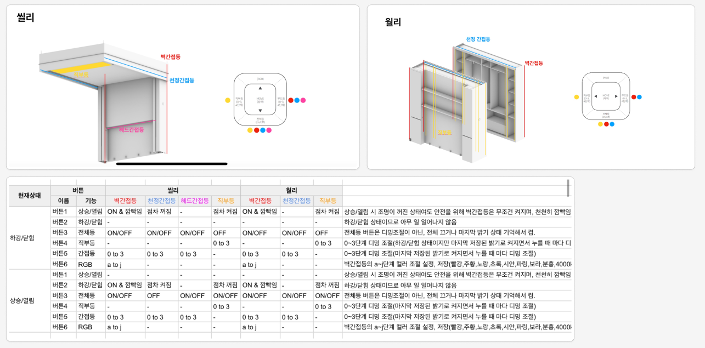

User manual
사용자가 wally와 인터렉션 하는 부분을 설명한다. 빨간색으로 표시된 항목은 아직 구현되지 않은 부분이다.
모션 제어
기본 동작 제어
- 조작 버튼 또는 앱(ble)을 통해 열림/닫힘 제어 가능해야 한다.
- 열림/닫힘 버튼을 누르면 해당 방향으로 움직이며, 어떤 방향으로든 한번 더 누르면 멈춘다.
- 동작 시작시 각 모터는 S-Curve로 가속한다.
- 동작 중 양 끝 Limit 센서를 만나면 S-Curve로 감속한다.
- Wally의 이동속도는 50 mm/sec 이다
- 동작이 끝나고 속도가 0이 되면 모터를 Disable하여 사용자가 수동으로 움직일 수 있도록 한다.
좌/우 방향
- 설치시 좌/우 방향을 설정할 수 있다.
- 좌/우 방향에 따라 open/close의 방향이 반대가 된다.
긴급 정지
- 토크 감지, 포토 센서를 통해 외부 장애 요소가 인식되는 경우 긴급 정지(속도를 0으로 변경)한다.
- E-Stop 스위치가 눌리면 긴급 정지한다.
안전 제어
- 동작 중 토크 감지를 통해 충격이 감지되면 긴급 정지한다.
- 동작 중 포토 센서가 감지되면 긴급 정지한다.
올림/내림 공통
- 보드와 모터의 연결이 끊어지는 경우 긴급 정지 한다.
LED 제어
버튼 LED 제어

동작 중 LED 제어
BLE LED 제어
알림
아래 요소에 대해 알림을 제공한다.
- 동작의 시작/멈춤 이벤트와 명령의 주체
- 동작 중 이상이 감지되었을 때 에러코드
상태 정보 표시
- 기기의 상태 정보를 내보낸다.
Internal manual
시리얼 번호
- 각 장치별 고유 8자리 시리얼 번호를 갖는다.
ble 통신 속도
- Ex) device status를 읽어 들이는 통신을 100ms 마다 통신한다.
- 통신 관련 파라미터는 아래와 같다.
토크 학습 기능
- 환경에 맞는 토크값을 학습할 수 있는 기능을 제공한다.
- 학습한 결과를 저장할 수 있는 기능을 제공한다.
- 학습한 결과를 초기화 할 수 있는 기능을 제공한다.
장치의 치수
- 장치의 치수를 확인/설정할 수 있는 프로파일을 제공한다.
- 장치의 치수가 설정되지 않았다면 동작하지 않는다.
장비 상태
- 장비의 상태를 확인 할 수 있는 프로파일을 제공한다.
- 장비의 상태가 정상이 아니라면 동작하지 않는다.